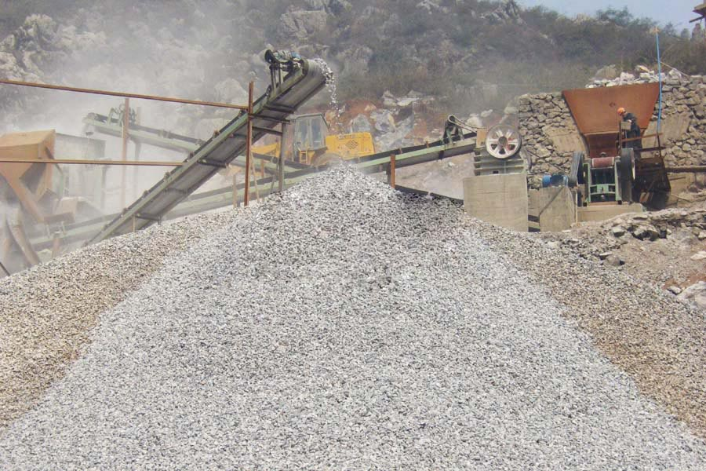

Construction waste crushing production line

Mobile construction waste crushing station for urban construction waste crushing.
stone cone crusher machine
stone cone crusher machine. Highway stone production line performance introduction: Our company produces a full set of highway stone production line equipment, to provide you with comprehensive technical support. The highway has shaker stone production line, jaw crusher, impact crusher.
Stone production line, stone production line Bonwe equipment, highway stone production line, our company will be advanced technology, scientific research, environmental protection, high-quality set is a Ao, gravel crushing achieve automation and advanced technology, the use of feeder, jaw broken, counterattack broken, vibrating screen and other crushing and screening equipment, the use of centralized control system.

Highway Stone Production Line
Asphalt concrete pavement is used in either SMA or Superpave Pavement Technology?the shape and rank of aggregate has been brought up a very high demand. Especially to the content of needle plate type in the basalt, the former impact crusher processing chart cannot meet the requirement any longer. Therefore, our company puts up the newest crushing and screening processing chart-VI series of Vertical Shaft Impact Crusher to meet the need. The high-quality aggregate produced by this production line is widely used in road surface of many highways.
Pakistan highway stone production plant suppliers. Reasonable stone production line configuration is fast building a qualified foundation stone of highway construction in recent years, the domestic highway for construction machinery, road stone crushing production line, sand production line offers a wide range of developing countries, the rapid development of space under construction, qualified not for highway aggregate demand.
The features of Highway stone processing
1. The quality of the product is very high. Content of needle plate type is no more than 5%. A diabase in Africa, once adopted Jaw Crusher and Impact Crusher. But content of needle plate type is more than 10%, resulting the bad sell of its product. After using VSI Series Vertical Shaft Impact Crushers, the content of needle plate type in the product is reduced to 4.7%.
2. The production improves 50% compared with useing Impact Crusher as the final processing of crushing.
3. Because we use Impact Crusher as the secondary crusher, and Vertical Shaft Impact Crusher consumes little metal, the consumption of wear-parts is reduced greatly in the whole process.
Building stone production line, stone crushing production line, highway stone production line, stone production line main purposes: I designed the production of stone production line can be used to aggregate hard limestone, granite, basalt, river gravel, metallurgical slag and other materials artificial sands operations for water and electricity, building materials.
Pakistan highway stone production plant manufacturers. Production crushing production line highway construction application in China, the status quo of crushing production line in China highway construction highway applications developed rapidly, as the basic raw material of gravel in highway construction production has also been considerable development, building a modern stone factory, production of high quality gravel is necessary.
Leave Me A Message, Now
If you have any questions regarding equipment prices, production line configuration or other problems, you can send a message to us, we will contact you soon.